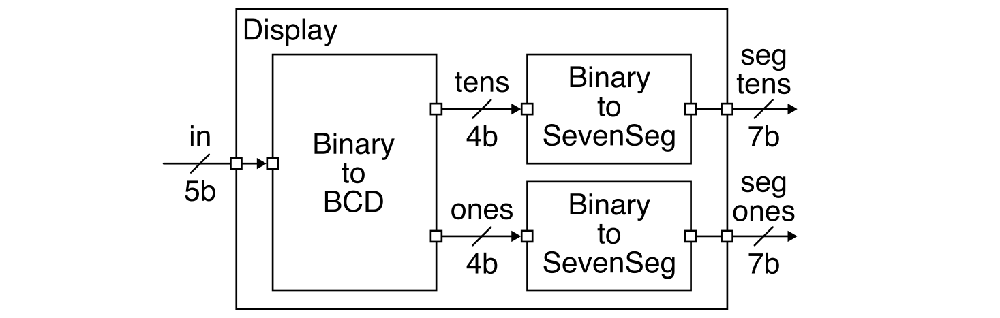
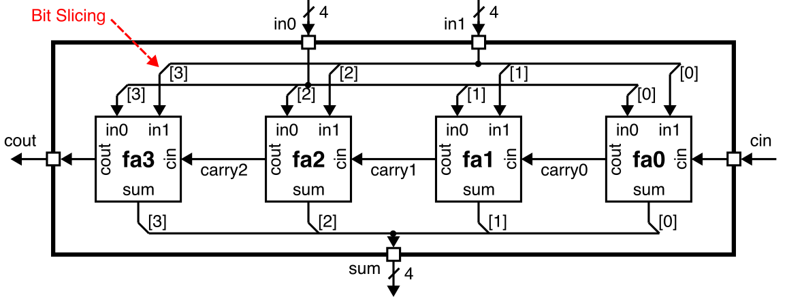
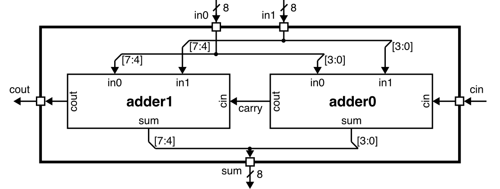
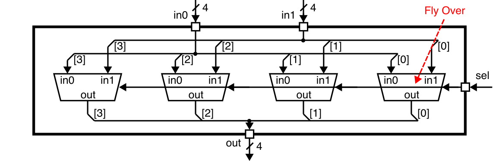
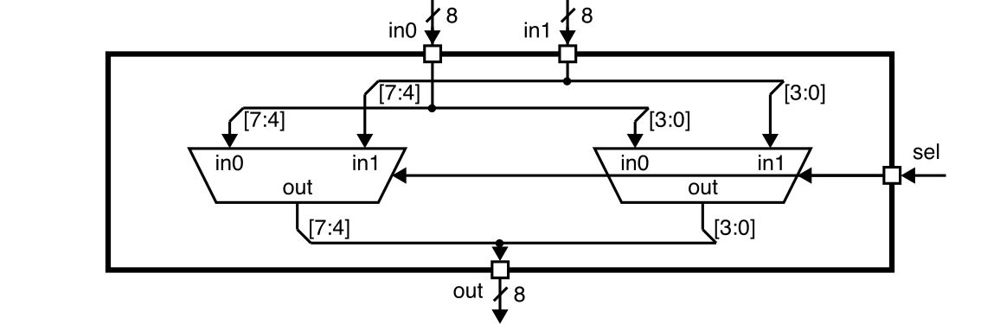

Lab 2: Two-Function Calculator (Code and Simulation)
Lab 2 will give you experience designing, implementing, testing, and prototyping more complicated combinational logic using the Verilog hardware description language. In addition to leveraging the concepts from lecture across two key abstraction layers: logic gates and Boolean equations, this lab will also reinforce three key abstraction principles: modularity, hierarchy, and regularity. This lab will give students experience with several combinational building blocks including multiplexors, adders, and multipliers.
You will be implementing a two-function calculator that takes as input two binary values and then calculates either the sum or the product of these two values. The input values and the result will be displayed on seven-segment displays using your Verilog hardware design from Lab 1. Parts of the calculator will be used in future labs. Your implementation will mostly use combinational logic gates and/or Boolean equations, but you will also start to explore very simple register-transfer-level modeling. You will also gain experience comparing implementations using gate-level and Boolean equations vs implementations using register-transfer-level modeling. Lab 2.1 focuses on using simulation to test your design, while Lab 2.2 will explore integrating, synthesizing, analyzing, and configuring your design for an FPGA prototype. Lab 2 must be done with a partner. You can confirm your assigned partner on Canvas (Click on People, then Groups, then search for your name to find your lab group)
This handout assumes that you have read and understand the course
tutorials and that you have attended the discussion sections. To get
started, use VS Code to log into an ecelinux server, source the setup
script, and clone your individual remote repository from GitHub:
% source setup-ece2300.sh
% mkdir -p ${HOME}/ece2300
% cd ${HOME}/ece2300
% git clone git@github.com:cornell-ece2300/groupXX
% cd ${HOME}/ece2300/groupXX
% tree
where XX should be replaced with your group number. You can both pull
and push to your remote repository. If you have already cloned your
remote repository, then use git pull to ensure you have any recent
updates before working on your lab assignment.
Go ahead and create a build directory in the lab2-calc directory for
this lab, and run configure to generate a Makefile.
Your repo contains the following files which are part of the automated build system:
Makefile.in: Makefile for the build systemconfigure: Configure script for the build systemconfigure.ac: Used to generate the configure scriptscripts: Scripts used by the build system
The hw subdirectory includes the following Verilog hardware design files.
BinaryToSevenSeg_GL.v: Binary-to-seven-segment converterBinaryToBinCodedDec_GL.v: Binary-to-BCD converterDisplay_GL.v: Five-bit numeric displayFullAdder_GL.v: Full adderAdderRippleCarry_4b_GL.v: 4-bit ripple-carry adderAdderRippleCarry_8b_GL.v: 8-bit ripple-carry adderMux2_1b_GL.v: 1-bit 2-to-1 multiplexorMux2_4b_GL.v: 4-bit 2-to-1 multiplexorMux2_8b_GL.v: 8-bit 2-to-1 multiplexorAdderCarrySelect_8b_GL.v: 8-bit carry-select adderAdder_8b_RTL.v: 8-bit register-transfer-level adderMultiplier_1x8b_GL.v: 1-bit by 8-bit multplierMultiplier_2x8b_GL.v: 2-bit by 8-bit multplierMultiplier_2x8b_RTL.v: 2-bit by 8-bit register-transfer-level multiplierCalculator_GL.v: Calculator supporting addition and multiplicationCalculatorDisplay_GL.v: Calculator with seven-segment displays
The test subdirectory includes the following test libraries and test
benches.
ece2300-test.v: ECE 2300 unit testing frameworkBinaryToSevenSeg_GL-test.v: Tests for binary-to-seven-segment converterBinaryToBinCodedDec_GL-test.v: Tests for binary-to-BCD converterDisplay_GL-test.v: Tests for five-bit numeric displayFullAdder_GL-test.v: Tests for full adderAdderRippleCarry_4b_GL-test.v: Tests for 4-bit ripple-carry adderAdderRippleCarry_8b_GL-test.v: Tests for 8-bit ripple-carry adderMux2_1b_GL-test.v: Tests for 1-bit 2-to-1 multiplexorMux2_4b_GL-test.v: Tests for 4-bit 2-to-1 multiplexorMux2_8b_GL-test.v: Tests for 8-bit 2-to-1 multiplexorAdderCarrySelect_8b_GL-test.v: Tests for 8-bit carry-select adderAdder_8b_RTL-test.v: Tests for 8-bit register-transfer-level adderMultiplier_1x8b_GL-test.v: Tests for 1-bit by 8-bit multplierMultiplier_2x8b_GL-test.v: Tests for 2-bit by 8-bit multplierMultiplier_2x8b_RTL-test.v: Tests for 2-bit by 8-bit register-transfer-level multiplierCalculator_GL-test.v: Tests for calculator supporting addition and multiplicationCalculatorDisplay_GL-test.v: Tests for calculator with seven-segment displays
Finally, the sim directory includes the following interactive
simulator.
calculator-sim.v: Interactive simulator for calculator with seven-segment displays
The _GL suffix indicates which hardware designs should be implemented
using the logic gate or Boolean equation layers of abstraction. For these
designs, students are only allowed to use these Verilog constructs:
wire,assignnot,and,nand,or,nor,xor,xnor~,&,|,^- literals (e.g.,
1'b0,1'b1) - module instantiation
The _RTL suffix indicates which hardware designs should be implemented
using register-transfer-level (RTL) modeling. For RTL designs, students
can additionally use the following Verilog constructs.
+*
Using unallowed Verilog constructs will result in significant penalties for code functionality and code quality. If you have any questions on what Verilog constructs can and cannot be used, please ask an instructor. There are no restrictions on Verilog constructs in test benches.
The lab assignment is divided into two parts each with several steps. Complete each step before moving on to the next step.
-
Part A (Submit on GitHub by Thu, Sep 26 @ 11:59pm)
- Step 1. Copy your lab 1 design and testing code into lab 2
- Step 2. Implement and test
FullAdder_GL - Step 3. Implement and test
AdderRippleCarry_4b_GL - Step 4. Implement and test
AdderRippleCarry_8b_GL - Step 5. Implement and test
Mux2_1b_GL - Step 6. Implement and test
Mux2_4b_GL - Step 7. Implement and test
Mux2_8b_GL - Step 8. Implement and test
AdderCarrySelect_8b_GL - Step 9. Implement and test
Adder_8b_RTL
-
Part B (Submit on GitHub by Thu, Oct 3 @ 11:59pm)
- Step 10. Implement and test
Multiplier_1x8b_GL - Step 11. Implement and test
Multiplier_2x8b_GL - Step 12. Implement and test
Multiplier_2x8b_RTL - Step 13. Implement and test
Calculator_GL - Step 14. Implement and test
CalculatorDisplay_GL
- Step 10. Implement and test
Students will almost certainly need to spend significant time outside of their lab session to complete this lab. Students with a lab session early in the week can use their lab session to get started with the help of the course staff and then finish on their own before the deadline. Students with a lab session late in the week can get started on their own and use their lab session to finish their lab with the help of the course staff. Even though Part B does not need to be submitted on GitHub until Thursday, October 3rd, students still must have Part B completed before their lab session during the FPGA week in order to complete the FPGA lab check-off tasks.
It is critical for students to work together to complete the lab assignment. It is unlikely one student can complete the entire lab on their own. A very productive approach is to have one student work on the design of a few hardware modules while the other student works on the test benches for those same hardware modules. Then work together to test and debug these modules. Then switch roles and move on the next few modules.
Even though this may seem like many steps, several hardware modules are
reused from Lab 1. Some hardware modules can be implemented in just a few
lines of Verilog (e.g., FullAdder_GL, Mux2_1b_GL, Adder_8b_RTL,
Multiplier_2x8b_RTL). It should also be possible to reuse your test
cases unchagned to verify hardware modules that have the same interface
(e.g., the same test cases can be used for AdderRippleCarry_8b_GL,
AdderCarrySelect_8b_GL, and Adder_8b_RTL; similarly, the same test
cases can be used for Multiplier_2x8b_GL and Multiplier_2x8b_RTL).
Be strategic; work through one step at a time; start early!
1. Interface and Implementation Specification
You will be implementing and composing a variety of combinational building blocks including muxes, adders, and multipliers; ultimately you will be composing combinational building blocks to implement a two-function calculator that takes as input two binary values and then calculates either the sum or the product of these two values. This section describe the required interface (i.e., the ports for the module and the module's functional behavior) before describing the required implementation (i.e., what goes inside the module) for each combinational building block.
1.1. Five-Bit Numeric Display
Recall the five-bit numeric display you implemented in Lab 1 which takes as input a five-bit binary value and outputs two seven-bit values, each of which can be used to control a seven-segment display.

You should reuse your code from Lab 1. You can choose either the
unoptimized or optimized implementation from either partner. Copy this
code into BinaryToSevenSeg_GL.v, BinaryToBinCodedDec_GL.v,
Display_GL.v in your Lab 2 repo.
1.2. Full Adder
A full adder adds three one-bit input values to produce a single two-bit output.
Review the lecture notes to derive the truth table for a full adder and
implement this truth table in FullAdder_GL.v. Use either an explicit
gate-level network or Boolean equations. Even though we learned from Lab
1 that the FPGA tools will thoroughly optimize your logic, we sill
recommend using simplified logic for the sum and cout signals to
enable the reader to easily see that this module does indeed implement a
full adder.
1.3. Four-Bit Ripple-Carry Adder
A four-bit adder performs four-bit binary addition (i.e., adds two four-bit input values to determine a four-bit sum output). A four-bit ripple-carry adder chains together four full-adders to enable adding two four-bit values producing a four-bit sum.

Review the lecture notes to understand how a four-bit ripple-carry adder
implements binary addition. This specific ripple-carry adder includes a
dedicated carry input port (cin) since we are going to want to chain
multiple instances of the ripple carry adder together to create even
larger adders.
To implement the ripple-carry adder, we need to take a four-bit input port and use bit slicing to connect each bit of the input port to a different full adder module. We also need to take four one-bit outputs from the four full adders and use bit slicing to connect them to each bit of the four-bit output port. In the above block-level diagram, we indicate bit slicing with a small diagonal line and which bit is being sliced in brackets.
Implement a four-bit ripple-carry adder in AdderRippleCarry_4b_GL.v by
instantiating four FullAdder_GL modules and correctly connecting all of
the ports. You will need three internal wires to implement the carry
chain.
1.4. Eight-Bit Ripple-Carry Adder
We can implement an eight-bit ripply-carry adder by simply chaining together two four-bit ripple carry adders.

We again need to use bit slicing to connect four-bit slices of the input and output ports to the four-bit ripple carry adders.
Implement an eight-bit ripple-carry adder in AdderRippleCarry_8b_GL.v
by instantiating AdderRippleCarry_4b_GL modules and correctly
connecting all of the ports. You will need an internal wire to implement
the carry chain.
1.5. One-Bit Two-to-One Multiplexor
A one-bit two-to-one multiplexor has two input ports and a select input port which chooses which input port should be assigned to the output port.
Review the lecture notes to derive the truth table for a one-bit
two-to-one multiplexor and implement this truth table in Mux2_1b_GL.v.
Use either an explicit gate-level network or Boolean equations.
1.6. Four-Bit Two-to-One Multiplexor
A four-bit two-to-one multiplexor has two four-bit input ports and a selec tinput which chooses which input port should be assigned to the four-bit output port.

We can implement a four-bit two-to-one multiplexor by using four one-bit two-to-one multiplexors in parallel. The top-level select input is connected to every child mux's select input. In the diagram above, we are using "fly over" connections where the select signal "flys over" each mux; the arrow heads indicate where the fly over connects to each mux's select input. We use bit slicing to connect each bit of the four-bit input and output ports to the appropropriate one-bit input and output ports of the child muxes.
Implement a four-bit two-to-one multiplexor in Mux2_4b_GL.v by
instantiating four Mux2_1b_GL modules and correctly connecting all of
the ports.
1.7. Eight-Bit Two-to-One Multiplexor
We can implement an eight-bit two-to-one multiplexor by simply instantiating two four-bit two-to-one multiplexors.

We again need to use bit slicing to connect four-bit slices of the input and output ports to the four-bit muxes.
Implement an eight-bit two-to-one multiplexor in Mux2_8b_GL.v by
instantiating Mux2_4b_GL modules and correctly connecting all of the
ports.
1.8. Eight-Bit Carry-Select Adder
An eight-bit carry-select adder has the same interface as an eight-bit ripple-carry adder but a very different implementation. An eight-bit carry-select adder breaks the addition operation into two parts: a four-bit lower ripple-carry adder is used to calculate the lower four bits of the sum output. Two four-bit upper ripple-carry adders are used to redundantly calculate the sum of the upper four bits; one assumes the carry out from the lower adder is zero and the other assumes the carry out from the lower adder is one. In this way all three four-bit ripple-carry adders can operate in parallel. Once we know the carry output from the lower adder we can use a four-bit two-to-one mux to quickly choose the correct sum for the upper four bits.
Review the lectures notes on carry-select adders and implement an
eight-bit carry-select adder in AdderCarrySelect_8b_GL by instantiating
three AdderRippleCarry_4b_GL modules, one Mux2_4b_GL module, and one
Mux2_1b_GL module and then correctly connecting all of the ports. You
will likely need some internal wires.
1.9. Eight-Bit Register-Transfer-Level Adder
All of work in the lab assignments so far has involved using gate-level networks and/or Boolean equations. We will gradually start to experiment with using register-transfer-level (RTL) modeling throughout the rest of the lab assignments. RTL modeling involves working at a higher-level of abstraction. This can drastically increase designer productivity but only if the designer always keeps in mind the hardware we are actually modeling! It is possible to use Verilog RTL which does not model any kind of real hardware.
When using Boolean equations, we are only allowed to use a very limited
number of Verilog operators (~, &, |, ^). The simplest form of
RTL modeling enables using more sophisticated operators. For example,
instead of implementing an eight-bit ripple-carry adder or an eight-bit
carry-select adder, we can use RTL modeling through the + operator to
implement an eight-bit adder in a single line of Verilog.
For example, here is an eight-bit RTL adder without a carry input or carry output:
module Adder_8b_RTL
(
input logic [7:0] in0,
input logic [7:0] in1,
output logic [7:0] sum
);
assign sum = in0 + in1;
endmodule
Notice how we use logic instead of wire in RTL modeling; the logic
datatype is meant for modeling at high levels of abstraction. Clearly
this is much more productive than implementing a ripple-carry or
carry-select adder using a gate-level network or Boolean equations.
However, we have also given up control over the exact adder
implementation. When using RTL modeling, we usually give the FPGA tools
more freedom to choose the detailed implementation of some combinational
building blocks like adders.
In this lab assignment, we want our adders to have carry input and carry output ports. We can use the following RTL to achieve implement this kind of adder.
module Adder_8b_RTL
(
input logic [7:0] in0,
input logic [7:0] in1,
input logic cin,
output logic cout,
output logic [7:0] sum
);
assign {cout,sum} = in0 + in1 + {7'b0,cin};
endmodule
We must zero extend cin since Verilator will not allow us to add
signals of different bitwidths. We assign the output to a concetentation
of two signals so we can retrieve the carry output.
Implement an eight-bit RTL adder in Adder_8b_RTL.
1.10. One-bit by Eight-Bit Multiplier
A one-bit by eight-bit multiplier multiplies an eight-bit input value by
a one-bit input value to determine an eight-bit product output. Review
the lecture notes for more on multipliers and then implement this simple
multiplier in Multiplier_1x8b_GL. Use either an explicit gate-level
network or Boolean equations.
1.11. Two-bit by Eight-Bit Multiplier
A two-bit by eight-bit multiplier multiplies an eight-bit input value by a two-bit input value to determine an eight-bit product output.
We use two one-bit by eight-bit multipliers to create the two partial products, and then we use an eight-bit adder to sum these two partial products to get the final result. If the output overflows then the implementation should truncate by using the lower eight bits of the product.
Review the lecture nodes for more on multipliers and then implement this
multiplier in Multiplier_2x8b_GL by instantiating two
Multiplier_1x8b_GL modules and one AdderCarrySelect_8b_GL and
correctly connecting all of the ports. You will likely need some internal
wires. Note that you may also have some unused signals (i.e., the carry
output from the adder and the most significant bit of the sum). These
unused signals will cause verilator linting errors. If a signal has
unused in its name, then verilator will assume the designer
explicitly wants this signal to be unused. So you can use the following
Verilog snippet to avoid unused signal errors for a wire named foo.
Feel free to use such snippets with an associated comment if you are confident that the signal really should be unused.
1.12. Two-bit by Eight-Bit Register-Transfer-Level Multiplier
Similar to our eight-bit RTL adder, we can also implement a two-bit by
eight-bit RTL multplier. Instead of implementing the multiplier by
instantiating various hardware modules, we can use RTL modeling through
the * operator to implement an eight-bit multiplier in a single line of
Verilog. Implement such a two-bit by eight-bit RTL multiplier in
Multiplier_8b_RTL.
1.13. Two-Function Calculator
We can now put our adder and multiplier together using an eight-bit
two-to-one mux to create a two-function calculator. The calculator has an
op input to select which operation we want to perform. If op is zero
then we perform addition; if op is one then we perform multiplication.
Note that you will need to connect just the least-significant two bits of
input in1 to the multiplier's input in1.
Implement the calculator in Calculator_GL.v by instantiating an
AdderCarrySelect_8b_GL module, an Multiplier_2x8b_GL module, and a
Mux2_8b_GL module and then correctly connecting all of the ports. You
will likely need some internal wires. You may also need to use an extra
Verilog snippet to avoid unused signal errors.
1.14. Two-Function Calculator with Seven-Segment Displays
We are finally now ready to implement the complete calculator with the
seven-segnment displays. The inputs are only five bits, so you will need
to zero extend these values when connecting them to the inputs of the
calculator. Both inputs and the output of the calculator should be
attached to an instance of the five-bit numeric display module you
developed in the previous lab. Implement the complete calculator in
CalculatorDisplay_GL.v by instantiating a Calculator_GL module and
three Display_GL modules and then correctly connecting all of the
ports.
2. Testing Strategy
You are responsible for developing an effective testing strategy to ensure all implementations are correct. Writing tests is one of the most important and challenging aspects of designing hardware. Hardware engineers often spend far more time implementing tests than they do implementing the actual hardware design.
2.1. Basic Testing
We will be using the same lightweight testing framework from Lab 1. For
each hardware module, we provide a test bench for you to use along with
one basic test case. Unlike in Lab 1, we will now be using an automated
build system to simplify linting, compiling, and running tests. You can
run the basic tests for all hardware modules using the generated
Makefile.
You can also build and run a single test simulator.
% cd ${HOME}/ece2300/groupXX/lab2-calc/build
% make BinaryToSevenSeg_GL-test
% ./BinaryToSevenSeg_GL-test
You can specify which specific test case to run on the command line and also dump waveforms that can be viewed using Surfer.
% cd ${HOME}/ece2300/groupXX/lab2-calc/build
% make BinaryToSevenSeg_GL-test
% ./BinaryToSevenSeg_GL-test +test-case=1
% ./BinaryToSevenSeg_GL-test +test-case=1 +dump-vcd=waves.vcd
2.2. Exhaustive Testing
The following test benches are for hardwware modules with a limited number of inputs, and thus you can (and should) use exhaustive testing:
BinaryToSevenSeg_GL-test.vBinaryToBinCodedDec_GL-test.vDisplay_GL-test.vFullAdder_GL-test.vMux2_1b_GL-test.v
To get started, you should copy your exhaustive test cases from Lab 1
into BinaryToSevenSeg_GL-test.v, BinaryToBinCodedDec_GL-test.v, and
Display_GL-test.v. Verify that all of your basic and exhaustive tests
for these modules are passing.
2.3. Directed Testing
The remaining hardware modules all have many more inputs and thus would
required hundreds or even thousands of checks to implement exhaustive
testing. So for the remaining hardware modules you can use directed
testing to check for specific corner cases. You should implement a few
directed test cases for each hardware module where exhaustive testing is
not applicable. Each directed test case should focus on testing a very
specific kind of functionality and they should contain 2-10 checks. Be
sure to add your tests cases to the list in the initial block and to
check the output of the test simulator to confirm that your directed test
cases are running and testing what you expect them to. Consider
purposefully inserting a bug in your designs to see if your directed test
cases will catch the bug.
2.4. Random Testing
Directed testing is useful for testing the known unknowns, but what about
the unknown unknowns? How should we test for corner cases we have not
even thought of yet? Random testing can help increase our testing
coverage and increase our confident that our hardware design is
functionally correct. You should implement one random test case for each
hardware module where exhaustive testing is not applicable. Random test
cases should include a for loop with approximately 50 iterations. Each
iteration should: (1) generate random input values; (2) use Verilog test
code to programmatically determine the correct output values; and (3) use
the check task to ensure the design-under-test produces the correct
outputs give the corresponding random inputs.
2.3. Simulator
We have provided you a simple calculator simulator which will emulate what you will prototype during the Lab 2 FPGA week. After finishing your implementation for the complete two-function calculator, you can build and run the calculator simulator like this:
% cd ${HOME}/ece2300/groupXX/lab2-calc/build
% make calculator-sim
% ./calculator-sim +in0-switches=00100 +in1-switches=00011 +button=0
% ./calculator-sim +in0-switches=00100 +in1-switches=00011 +button=1
The switches are connected to the inputs of the calculator, andt he
button is connected to the op input of the calculator. The calculator
simulator will show what the six seven segment displays would look like
on the FPGA prototype.
3. Lab Code Submission
Your code quality score will be based on the way you format the text in your source files, proper use of comments, deletion of instructor comments, and uploading the correct files to GitHub (only source files should be uploaded, no generated build files). Note that students must remove unnecessary comments that are provided by instructors in the code distributed to students. Students must not commit executable binaries or any other unnecessary files.
To submit your code you simply upload it to GitHub. Your design code will be assessed both in terms of functionality and code quality. Your functionality score will be determined by running your code against a series of tests developed by the instructors to test its correctness. Your test bench code will also be assessed both in terms of verification quality and code quality. Here is how we will be testing your code submission for Lab 2 Part A:
% mkdir -p ${HOME}/ece2300/submissions
% cd ${HOME}/ece2300/submissions
% git clone git@github.com:cornell-ece2300/groupXX
% cd ${HOME}/ece2300/submissions/groupXX/lab2-calc
% mkdir -p build
% cd build
% ../configure
% make check-partA
Here is how we will be testing your code submission for Lab 2 Part B: